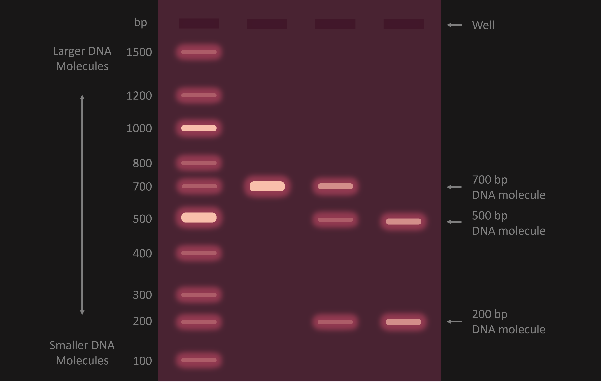

Interpretation of the result.
Next Step
An example of agarose gel data stained with ethidium bromide is presented in the panel. The wells, where samples are initially loaded, are identified at the top. Larger DNA molecules appear toward the upper portion of the gel, while smaller DNA molecules are located toward the lower section. Lane 1 features a DNA ladder, while lanes 2 through 4 showcase samples resulting from the digestion of a 700-bp DNA molecule by a restriction enzyme with a single cut site. Sample A comprises uncut DNA, sample B contains a combination of uncut and cut DNA, and sample C consists solely of cut DNA.
Following information can be derived from this DNA image.
- Samples are commonly loaded from left to right across the top of the gel, migrating vertically in lanes.
- Larger DNA molecules move more slowly through the gel and are positioned at the top, while smaller DNA molecules move swiftly and are found toward the bottom.
- Bands represent horizontal "bars" composed of stained DNA molecules within the gel. As DNA molecules traverse the gel, they are separated based on their molecular weight, with each band representing DNA of a specific molecular size.
- A "DNA molecular weight marker" or "DNA ladder" is usually included on either side. This marker comprises a mix of DNA molecules with known molecular sizes, enabling the determination of the size of each DNA molecule in a given sample.
- The relative intensity (thickness) of bands in a gel can be utilized to estimate the relative abundance of DNA molecules in the sample. The amount of stain in a band is roughly proportional to the amount of DNA in that band. Therefore, a dark, thick band indicates a highly abundant DNA molecule, while a faint, thin band suggests a relatively small amount of that DNA molecule in the sample.
- Lanes with a single band may indicate the presence of only one DNA molecule in the sample, whereas lanes with multiple bands suggest the presence of multiple molecules. For instance, in Figure 2, while sample A contains a single 700-bp DNA molecule, samples B and C contain 3 and 2 DNA molecules, respectively.